Tema 5 - Grundlæggende indhold
Redesign
Hvad gik opgaven ud på?
Redesign opgaven var en slags forsættelse af Pilotprojektet, på den måde at det var i samme grupper og vi igen skulle øve vores færdigheder i Premiere Pro.
Opgaven gik ud på at finde en virksomhed med en hjemmeside der trængte til et løft, og som var mulig at mødes med fysisk.
Vi valgte at arbejde med psykoterapeuten Anne-Clari, hvis hjemmeside ikke var opdateret i snart 20 år og i høj grad trængte til en kærlig hånd.
Reflektion
I modsætning til Pilotprojektet var jeg nu mere rolig over at skulle interviewe, filme og klippe en video - også fordi vi i denne omgang skulle gøre det sammen i gruppen.
I denne opgave følte jeg at vi fik samlet meget af det vi havde lært i løbet af semesteret, da vi både skulle arbejde Adobe XD, Photoshop, Premiere Pro og kodning.
Selve gruppe fungerede superfint og vi var gode til at hjælpe hinanden. Jeg føler at opgaven lærte mig en masse om kodning specielt!
Indledende overblik
Indholdet
For først at få et overblik over den originale side, lavede vi en indholdsoversigt og en funktionalitetsliste.
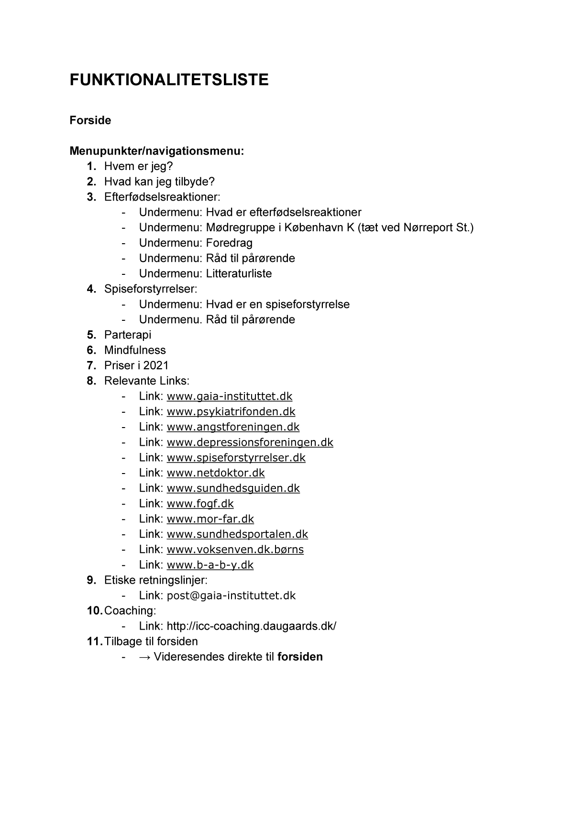Sitemap
Herefter lavede vi et sitemap, der viste at strukturen på siden var lidt flad.
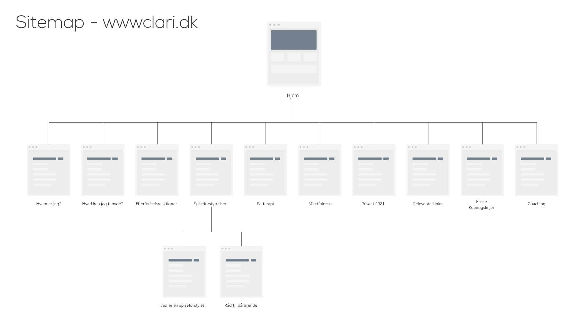Styletile
Derefter lavede vi et analyserende styletile for at se hvilke farver, fonte m.m. der var i brug.
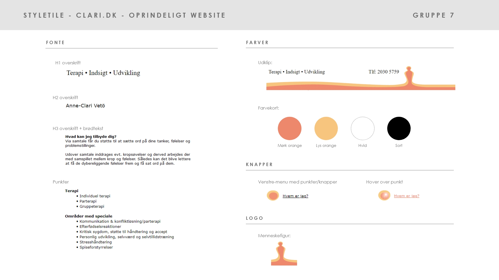Indledende snak med Anne-Clari
Moodboards
Hurtigt i processen havde vi en indledende snak med Anne-Clari om hvad hendes ønsker for sitet var. Vi lavede herefter nogle Moodboards hver især, som vi viste til hende for at danne rammen om en snak om farver og look.
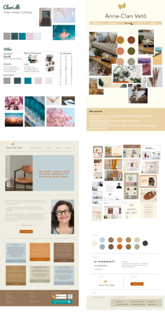Indhold
Ved snakken med Anne-Clari fandt vi også ud af at nogle af de tekster og sider der var på siden, slet ikke var relevante for hende mere. Derfor aftalte vi at hun skulle sende et reviderert dokument med rettede emner og tekster.
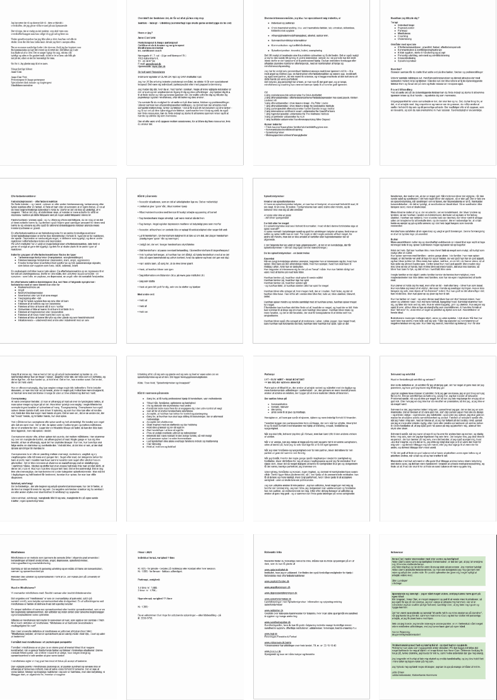Interview
Interviewguide
Inden vi skulle interviewe Anne-Clari sørgede vi for at lave en interviewguide med spørgsmål, der kunne give svar som ville underbygge den historie vi gerne ville fortælle; at Anne-Clari er en rigtig sød kvinde, der lytter og hjælper, og at der ikke er nogen skam i at gå i terapi.
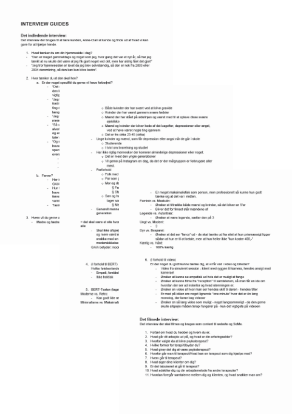Storyboard & B-rolls
Vi forsøgte at planlægge storyboard og B-rolls, og endte da også ud med at have en plan. Selve omgivelserne på kontoret var dog en smule tricky, fordi det var et ret lille kontor, og vejret den dag var umanerligt gråt og kedeligt, hvilket gjorde kontoret mørkt.
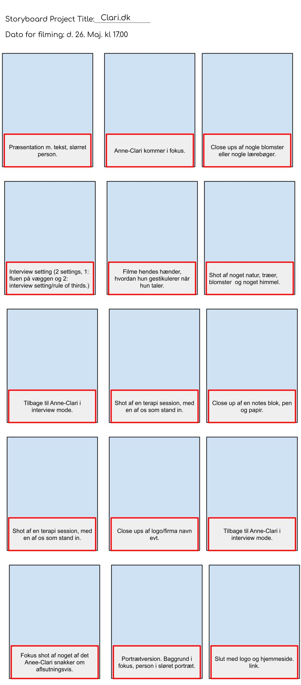Billedmateriale
Som ved Pilotprojektet viste det sig igen at vi ikke var gode nok til at indstille kameraerne til det dårlige lyse, og igen fik vi ret grynede billeder. Oven i det formåede vi at få den til at lave små film, i stedet for billeder, og langt det meste af vores billedmateriale var derfor nærmest ubrugeligt.
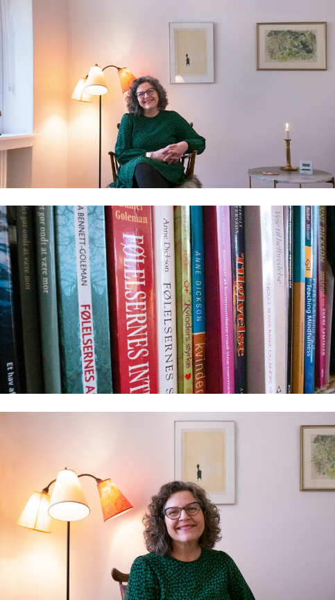Redesign
Nyt sitemap
Næste skrift i processen var at komme i gang med websitet. Efter at have fået det rettede dokument med indhold, lavede vi et nyt sitemap, som havde mere dybde end det gamle.
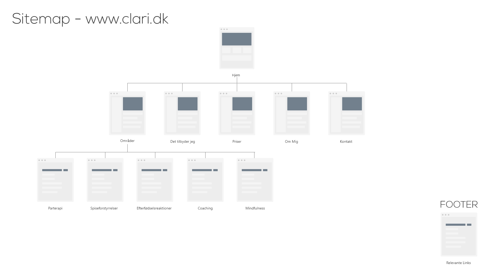Nyt styletile
Ud fra Moodboards-snakkede havde vi fået styr på både farver og hvilket logo hun ville bruge - for det var slet ikke på den gamle side. Herudover fik vi styr på fonte til både headlines og brødtekst også.
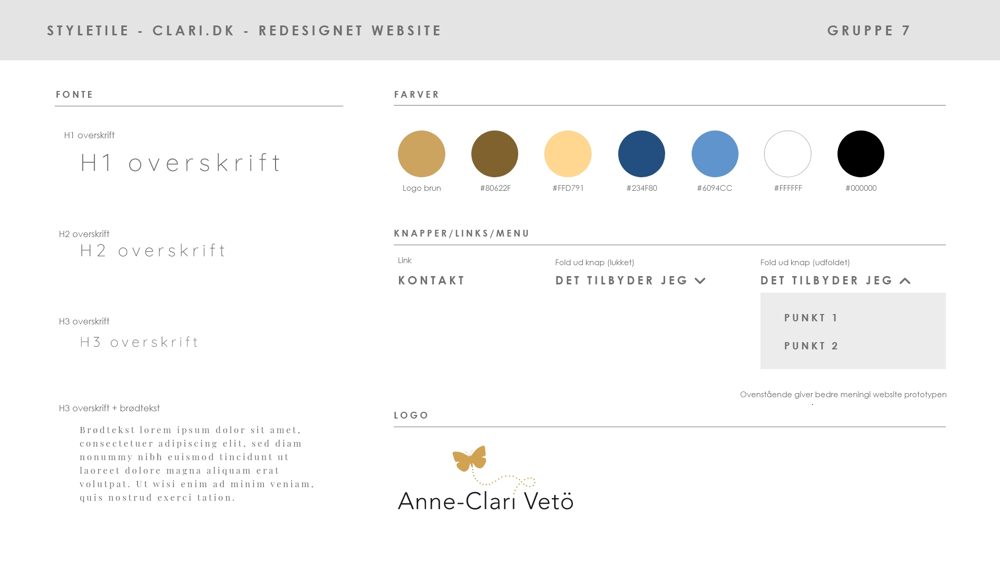Ny wireframe
Næste skridt var at komme i gang med websitet. Med udgangspunkt i de emner vi havde i det rettede tekst/indholds dokument, lavede vi wireframes til næste alle sider; både i mobil og web.
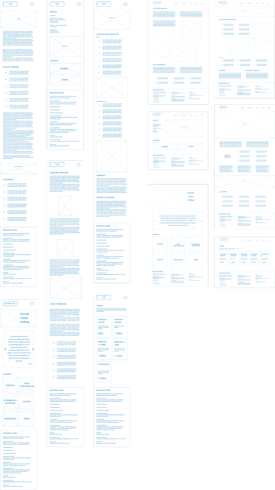Layoutdiagram
Som hjælpemiddel til kodningen lavede vi også layoutdiagrammer til alle siderne.
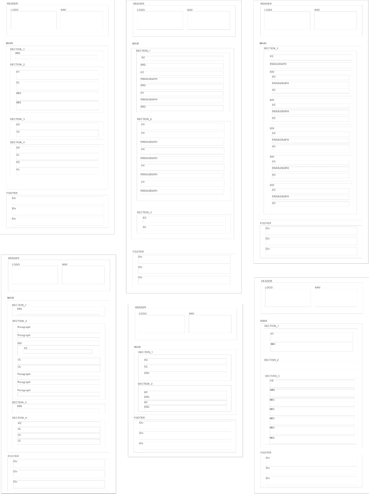Hifi prototype
Vi gik i gang med at lave hifi prototyper i både mobil og web format, i de farver vi havde fra styletile og med teksterne fra der rettede tekst dokument.
Grundet det dårlige billedmateriale endte vi med at bruge primært billeder fra Unsplash, som skulle give en rolig følelse. Ikke optimalt, men bedre end de billeder vi havde.
Vi lavede hifi prototyper på samtlige sider, så vi sikrede at vi fik et ensartet resultat, når nu vi jo var fire forskellige mennesker der snart skulle kode det.
Tests
Ekspert test (heuristisk)
Da vi havde lavet den færdige hifi prototype fik vi to klassekammerater til at lave en ekspert test på siden, som skulle finde de værste fejl og mangler. Heldigvis var vores værste kritikpunkt at paragraf fonten var svært læselig - men det var jo nemt at rette!
5-sekunders test
Vi havde til at starte med lavet en indledende 5-sekunders test på det originale site, for at se hvad folks opfattelse var der. Nu, med det nye site, lavede vi det igen og håbede på at folk denne gang havde et mere klart og positivt syn på sitet.
BERT-test
Ved den første snak med Anne-Clari havde vi lavet en BERT-test med hende, for at finde ud af hvilke emotionelle værdier hun gerne ville have at siden skulle have. Igen lavede vi den med det nye site, men på vores venner og bekendte for at se om vi havde lykkedes med at ramme hendes ønsker.
Resultatet
Resultatet af projektet var et website med rettet indhold, ny struktur og et mere up to date look.
Sidens farver var naturlige, rolige og varme, men uden at blive feminine, hvilket var vigtigt for Anne-Clari.
Derudover var der to videoer, der gav et indblik i hvordan det er at snakke med Anne-Clari og dét at være på hendes kontor.